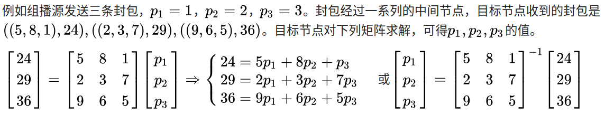
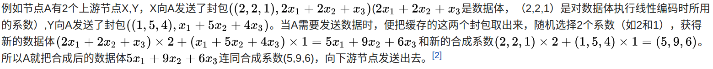

TCP/IP的问题
互联网上的数据传递都是封装在“包裹”里的,将信息传递到终点的程序，以及这些“包裹”的格式，通常用 TCP/IP 协议来描述。为了让 TCP 数据传输成功，接收数据的人需要按照当时发出时的顺序，准确的来接收这些“数字包裹”。如果其中有一个数据包，因为某种原因给丢失了，那么这种互联网协议就会将其看作是网络拥堵的一个信号，数据传输速度立刻下降一半，之后它速度回升起来的也非常缓慢。该处理机制在某些状况下也许很理想，但是在另外一些状况下就会很糟糕。其根本的原因就在于：这套互联网协议本身并没有足够的智能，来分别接下来做什么事才是最正确的选择。同时，尽管从理论上来说，数字包可以从 A 点到 B 点以无限条路径进行传说，但事实上，在一个 TCP 连接中，数据传输一般都走的是相同的路径，这就给了数字黑客以机会，方便他们侵入到你的通信交流中。
网络编码
网络编码是一种通过中继节点对接收到的信息进行编码来达到提高多播网络容量的技术。在传统的数据传输技术中，中继节点只负责数据的存储转发，而基于网络编码技术的网络的中继节点在具备传统中继功能的基础上，会根据网络编码规则将接收到的信息进行线性或非线性处理再进行传播，这种做法最直观的优势是减少了传输次数。
“网络编码”能够让网络中的每一个节点都变得比现在更加智能。在 TCP/IP 协议中，网络节点只是一些简单的转换节点，只负责存储“数字包裹”，并且按照之前预设的路径转发到下一节点，而相比之下，在“网络编码”中，每一个节点都可以对“数字包裹”进行再加工，比如重新编制路径，或者重新编码。将智能赋予到网络的每个节点，是该技术称得上“破坏性创新”的理由。因为这将赋予信息处理技术以史无前例的灵活性。例如，它可以利用多路径 TCP，另外，应用了再编码机制，可以进一步的提升安全性和数据传输速度，甚至能够在网络的每个节点内部存储数据信息。
在”网络编码”中，“数字包裹”中的内容被看作是一个真实的数字，“数字包裹”以“批”为单位进行处理。每一个节点都构建了一套线性方程，利用的是从“数字包裹”中提取出来的数字，以及随机生成的一组系数。每一个线性方程都能生成一个已编码的包裹，其系数存储在编码包裹的头部，未知的变量是每一个包裹的实际信息，当作一个数字。换句话说，每一个已编码的包裹中，都一次性的在几个“标准”的包裹上含有部分的信息，但同时还乘以不同的系数。如果你还没有忘记高中数学的话，你知道需要 N 个线性方程来解决 N 个未知变量。因为每一个以编码的数字包裹都包含一个单独的方程，这意味着接收信息者如果想要解码这段信息，就需要 N 个这样的数字包裹(当然乘以不同的系数才可以)。
这样做使得接收内容彻底与数字包裹接收的顺序撇开了关系,接收信息者得到了 N 个已编码的包裹，每个都配有不同的系数，所以它能够解开所有的方程，还原最原始的数据。这种打破固有顺序所带来的灵活性，意味着整个信息系统将更加高效。也意味着曾经在 TCP/IP 中发生的严重的数据传递延迟甚至数据包丢失的情况一去不复返。因为顺序不再重要，数字包裹可以在网络中以各种不同的路径进行传递，这样会提升安全性。也就没有人能够切入到私人的通信网络中。
线性网络编码
线性网络编码
假设网络是有向的，执行线性网络编码时每个节点收到所有连入线路的数据后，再执行编码，然后把数据从连出线路发出。新的数据包括执行线性编码所用的系数以及合成后的数据。
随机线性网络编码
随机线性网络编码可以取得更好的组播传输速率，较为实用。在实际网络中，节点会将来自连入线路的封包缓存起来，当节点需要发送封包时再将缓存的封包执行网络编码，然后发出。
